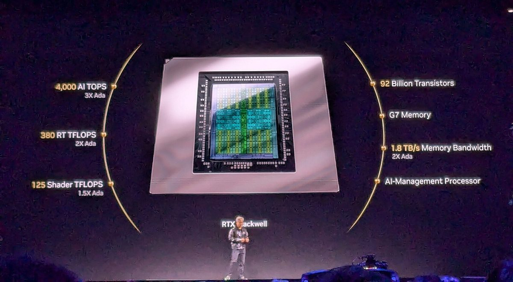

"Jensen": Musk's tribute after Huang resigns
Nvidia's board accepted its co-founder's resignation on Thursday morning. Musk sided with those who say founders cannot be replaced.
At 8:49 a.m. EST Thursday, Nvidia's newsroom posted "NVIDIA announces CEO transition." The release says Huang resigned as president, CEO and board member "effective immediately." Chief Financial Officer Colette Kress will run the company as interim CEO while keeping her finance job until a permanent successor is named. Kress said she is "committed to building on the extraordinary foundation Jensen created over the last 33 years."
The exit followed Huang's admission on Sunday that he had been unfaithful to his wife, reports that US intelligence suspected the businesswoman involved of being a Chinese agent, and a New York Times report of a second relationship with an executive who reported to him, NBC News recounted. The stock fell as much as 16% before closing down 4.3%.


"True words"
Early Thursday, investor Naval Ravikant had written: "You'd think we'd have learned from Steve Jobs and Travis Kalanick that one does not just simply replace the founder…" Musk replied "True words" at 12:44 p.m. EST, about four hours after the announcement.
At 5:51 p.m. he reposted Epic Games CEO Tim Sweeney's reaction from that morning:
"A sad day for NVIDIA, developers, America, and all humanity. Jensen founded and ran one of the few companies to reach a massive scale while driving massive continued innovation and ubiquity, while others fell into the trap of ever-increasing extraction."
One word, most-liked
Venture firm Andreessen Horowitz (@a16z) posted a video clip at 6:14 p.m. EST captioned "You're gonna be remembered forever because some things are eternal." Musk quoted it at 12:51 a.m. EST Friday with one word: "Jensen." It drew more than 86,000 likes by Friday morning, far ahead of anything else he posted in the day. On Wednesday night, as the board met, he had answered a call to hire Huang with "That would be an honor."
Blackwell chips in Chinese models
Former OpenAI researcher Will DePue posted at 4:29 p.m. EST what he called "conclusive forensic evidence" that the top four Chinese AI labs, DeepSeek, Moonshot, MiniMax and Ant Group, "have built their newest models on NVIDIA's most advanced Blackwell chips, which are barred from export to China." He says a model's starting weights carry a pattern unique to the GPU and seed that created them, and that traces survive training. Searching more than six trillion combinations, he matched six models, including DeepSeek-V4-Pro, Kimi K3 and MiniMax-M3, to Blackwell systems, and a Blackwell B300 reproduced DeepSeek-V4-Flash's starting weights "bit for bit." He estimates the two largest runs used 2,000 to 3,000 Blackwell GPUs each. Musk replied at 7:38 p.m. with a thinking-face emoji.